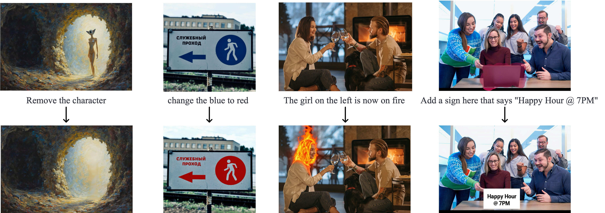
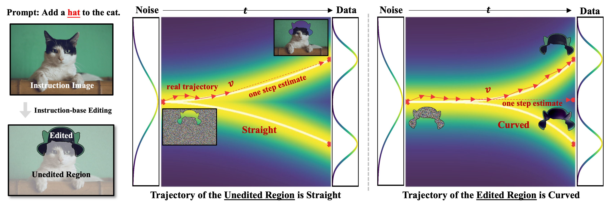
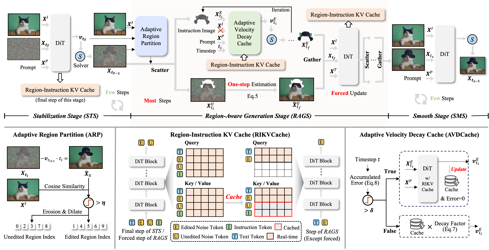
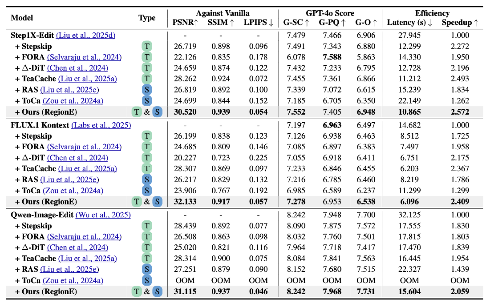

2
Integrate with 4 Lines of Code
* RegionE seamlessly integrates with Step1X-Edit, Qwen-Image-Edit, FLUX.1-Kontext and so on.
Full Usage Guide →Announcing RegionE, a training-free method that losslessly accelerates SOTA instruction-based image editing models, including Qwen-Image-Edit, FLUX.1-Kontext, and Step1X-Edit, achieving acceleration factors of 2-3×. The key lies in exploiting the spatial redundancy and timestep-wise redundancy in the image editing process. With simple pip installation, acceleration can be achieved in just four lines of code.
💡Most instruction-based image edits affect only local regions, yet existing models regenerate the entire image, wasting computation on unedited areas. This made us wonder: can full-image editing models be adapted to generate only the regions that matter, boosting editing efficiency?

Instruction-based image editing involves two distinct regions: the Edited Region (changes) and the Unedited Region (consistency). Our research reveals a fundamental divergence in the underlying generation process of these two regions:

The video below demonstrates one-step predictions of the final edited image using velocity from different denosing timesteps. Consistent with our trajectory analysis, unedited regions are accurately predicted early due to their straight trajectory, whereas edited regions require more iterations to resolve, confirming the necessity of distinct processing for their complex, curved generative trajectories.
Video: One-step predictions of the final edited image using velocity from different denoising timesteps.
RegionE is a plug-and-play acceleration framework that exploits internal mechanisms of pretrained models to distinguish edited from unedited image regions, and applies region-specific acceleration strategies accordingly. Its workflow consists of three stages:

The goal of this stage is to differentiate between edited and unedited regions.
In this stage, different acceleration strategies are applied based on the identified regions:
To ensure visual consistency, this final stage eliminates any visible boundaries between the edited and unedited regions. Specifically, no modifications are applied to the denoising process in the last few timesteps.
RegionE is compatible with models such as Qwen-Image-Edit, FLUX.1-Kontext, and Step1X-Edit. Evaluated on GEdit-Bench and Kontext-Bench, it achieves an overall 2–3x lossless acceleration.

The following showcases demonstrate RegionE's broad applicability. Select a model and an editing task to explore the performance. The following examples are randomly sampled from GEdit-Bench and Kontext-Bench, with editing speedups of 2–3×.
Integrate RegionE in seconds for lossless acceleration.
* RegionE seamlessly integrates with Step1X-Edit, Qwen-Image-Edit, FLUX.1-Kontext and so on.
Full Usage Guide →
If you have any questions or would like to discuss further, please feel free to contact me at:
Pengt.Chen@gmail.com
@article{chen2025regione,
title={RegionE: Adaptive Region-Aware Generation for Efficient Image Editing},
author={Chen, Pengtao and Zeng, Xianfang and Zhao, Maosen and Shen, Mingzhu and Ye, Peng and Xiang, Bangyin and Wang, Zhibo and Cheng, Wei and Yu, Gang and Chen, Tao},
journal={arXiv preprint arXiv:2510.25590},
year={2025}
}